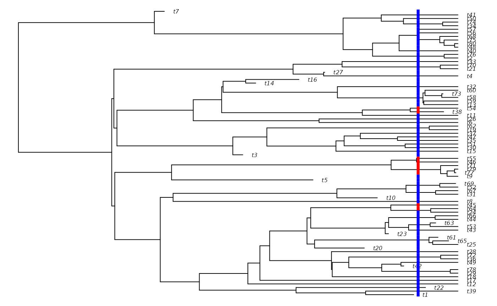
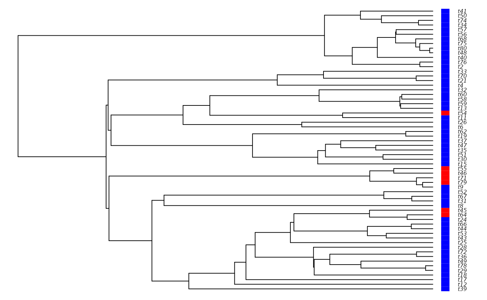

Using secsse with complete phylogenies (with extinction)
Pedro Santos Neves
2023-07-12
Source:vignettes/complete_tree.Rmd
complete_tree.RmdIntroduction
Most current studies of evolutionary dynamics make use of molecular phylogenies, which, for most groups, contain only information on extant species. However, when data on extinct species is available, usually through the presence of fossil data, we can use complete trees. Thus, we can leverage the data from extinct lineages for maximum-likelihood estimation.
Note that here “complete tree” should not be taken as a complete sampling fraction, that is, all known species being present in the phylogeny and there being no missing data, but rather the assumption that all currently extinct species are included. This follows the nomenclature of Nee et al. (1994), who also coined the term “reconstructed tree” for phylogenies for which there is no information on extinct lineages.
Set-up
Like all ML analyses with secsse, we first need a few things to start with, starting with a dated phylogeny. For the purpose of this vignette, we are going to use the DDD package to simulate a complete tree, and the ape package to add mock traits.
library(secsse)
library(DDD)
set.seed(41)
out <- DDD::dd_sim(pars = c(0.4, 0.1, 40), age = 15)
phy <- out$tas
spec_traits <- sample(c(0, 1), ape::Ntip(phy), replace = TRUE)
if (requireNamespace("diversitree")) {
for_plot <- data.frame(trait = spec_traits,
row.names = phy$tip.label)
diversitree::trait.plot(phy, dat = for_plot,
cols = list("trait" = c("blue", "red")),
type = "p")
}
#> Loading required namespace: diversitree
Now that we have our phylogeny, let’s specify our model. We are going
to specify the same ETD model as in the Starting secsse
vignette. For the full details, consult it with
vignette("Starting secsse", package = "secsse").
spec_matrix <- c()
spec_matrix <- rbind(spec_matrix, c(0, 0, 0, 1))
spec_matrix <- rbind(spec_matrix, c(1, 1, 1, 2))
lambda_list <- secsse::create_lambda_list(state_names = c(0, 1),
num_concealed_states = 2,
transition_matrix = spec_matrix,
model = "ETD")
mu_vec <- secsse::create_mu_vector(state_names = c(0, 1),
num_concealed_states = 2,
model = "ETD",
lambda_list = lambda_list)
shift_matrix <- c()
shift_matrix <- rbind(shift_matrix, c(0, 1, 5))
shift_matrix <- rbind(shift_matrix, c(1, 0, 6))
q_matrix <- secsse::create_q_matrix(state_names = c(0, 1),
num_concealed_states = 2,
shift_matrix = shift_matrix,
diff.conceal = TRUE)
q_matrix
#> 0A 1A 0B 1B
#> 0A NA 5 7 0
#> 1A 6 NA 0 7
#> 0B 8 0 NA 5
#> 1B 0 8 6 NA
idparsopt <- 1:8 # our maximum rate parameter was 8
idparsfix <- c(0) # we want to keep all zeros at zero
initparsopt <- rep(0.1, 8)
initparsfix <- c(0.0) # all zeros remain at zero.
sampling_fraction <- c(1, 1)
idparslist <- list()
idparslist[[1]] <- lambda_list
idparslist[[2]] <- mu_vec
idparslist[[3]] <- q_matrixFitting the model
Finally, we run secsse_ml() on our complete tree, much
in the same way as we would for one with extant species. However, this
time we make sure to set the is_complete_tree argument to
TRUE (defaults to FALSE if omitted). This
enables secsse to use the information present in extinct lineages.
complete_tree_ml <- secsse_ml(phy = phy,
traits = spec_traits,
num_concealed_states = 2,
idparslist = idparslist,
idparsopt = idparsopt,
initparsopt = initparsopt,
idparsfix = idparsfix,
parsfix = initparsfix,
sampling_fraction = sampling_fraction,
verbose = FALSE,
num_threads = 8,
is_complete_tree = TRUE)
#> Warning in check_ml_conditions(traits, idparslist, initparsopt, idparsopt, :
#> Note: you set some transitions as impossible to happen.Now we can see what our results look like.
complete_tree_ml_etd <- complete_tree_ml$ML
ETD_par_complete <- secsse::extract_par_vals(idparslist, complete_tree_ml$MLpars)
complete_tree_ml_etd
#> [1] -279.2373
ETD_par_complete
#> [1] 5.389534e-04 4.006497e-01 1.161922e-01 7.980695e-02 7.292250e+01
#> [6] 6.858051e+01 2.743970e-01 6.471424e-01
spec_rates_complete <- ETD_par_complete[1:2]
ext_rates_complete <- ETD_par_complete[3:4]
Q_Examined_complete <- ETD_par_complete[5:6]
Q_Concealed_complete <- ETD_par_complete[7:8]
spec_rates_complete
#> [1] 0.0005389534 0.4006497133
ext_rates_complete
#> [1] 0.11619221 0.07980695
Q_Examined_complete
#> [1] 72.92250 68.58051
Q_Concealed_complete
#> [1] 0.2743970 0.6471424Comparing with reconstructed trees
It would be interesting to see how they compare with the same tree without any extant species. Let’s follow the standard procedure using a similar phylogeny - the same tree we used before, but where all the extinct lineages have been removed. We’ll keep all other model specification the same.
phy_reconstructed <- out$tes
# Grab the correct traits of the extant lineages
extant_traits <- traits[phy_reconstructed$tip.label, ]$trait
if (requireNamespace("diversitree")) {
for_plot <- data.frame(trait = extant_traits,
row.names = phy_reconstructed$tip.label)
diversitree::trait.plot(phy_reconstructed, dat = for_plot,
cols = list("trait" = c("blue", "red")),
type = "p")
}
reconstructed_tree_ml <- secsse_ml(phy = phy_reconstructed,
traits = extant_traits,
num_concealed_states = 2,
idparslist = idparslist,
idparsopt = idparsopt,
initparsopt = initparsopt,
idparsfix = idparsfix,
parsfix = initparsfix,
sampling_fraction = sampling_fraction,
verbose = FALSE,
num_threads = 8,
is_complete_tree = FALSE)
#> Warning in check_ml_conditions(traits, idparslist, initparsopt, idparsopt, :
#> Note: you set some transitions as impossible to happen.
reconstructed_tree_ml_etd <- reconstructed_tree_ml$ML
ETD_par_reconstructed <- secsse::extract_par_vals(idparslist, reconstructed_tree_ml$MLpars)
reconstructed_tree_ml
#> $MLpars
#> $MLpars[[1]]
#> $MLpars[[1]][[1]]
#> 0A 1A 0B 1B
#> 0A 2.269519e-05 0 0 0
#> 1A 0.000000e+00 0 0 0
#> 0B 0.000000e+00 0 0 0
#> 1B 0.000000e+00 0 0 0
#>
#> $MLpars[[1]][[2]]
#> 0A 1A 0B 1B
#> 0A 0 0.0000000 0 0
#> 1A 0 0.2017861 0 0
#> 0B 0 0.0000000 0 0
#> 1B 0 0.0000000 0 0
#>
#> $MLpars[[1]][[3]]
#> 0A 1A 0B 1B
#> 0A 0 0 0.000000e+00 0
#> 1A 0 0 0.000000e+00 0
#> 0B 0 0 2.269519e-05 0
#> 1B 0 0 0.000000e+00 0
#>
#> $MLpars[[1]][[4]]
#> 0A 1A 0B 1B
#> 0A 0 0 0 0.0000000
#> 1A 0 0 0 0.0000000
#> 0B 0 0 0 0.0000000
#> 1B 0 0 0 0.2017861
#>
#>
#> $MLpars[[2]]
#> 0A 1A 0B 1B
#> 2.533588e-06 5.065608e-06 2.533588e-06 5.065608e-06
#>
#> $MLpars[[3]]
#> 0A 1A 0B 1B
#> 0A NA 12.1605308 10.114101 0.00000
#> 1A 3.9338535 NA 0.000000 10.11410
#> 0B 0.1034804 0.0000000 NA 12.16053
#> 1B 0.0000000 0.1034804 3.933854 NA
#>
#>
#> $ML
#> [1] -113.247
#>
#> $conv
#> [1] 0
ETD_par_reconstructed
#> [1] 2.269519e-05 2.017861e-01 2.533588e-06 5.065608e-06 1.216053e+01
#> [6] 3.933854e+00 1.011410e+01 1.034804e-01
spec_rates_reconstructed <- ETD_par_reconstructed[1:2]
ext_rates_reconstructed <- ETD_par_reconstructed[3:4]
Q_Examined_reconstructed <- ETD_par_reconstructed[5:6]
Q_Concealed_reconstructed <- ETD_par_reconstructed[7:8]
knitr::kable(data.frame(
Reconstructed = c(spec_rates_reconstructed, ext_rates_reconstructed, Q_Examined_reconstructed, Q_Concealed_reconstructed),
Complete = c(spec_rates_complete, ext_rates_complete, Q_Examined_complete, Q_Concealed_complete), row.names = c("Speciation rate 0", "Speciation rate 1", "Extinction rate 0", "Extinction rate 1", "Transition examined rate 0", "Transition examined rate 1", "Transition concealed rate 0", "Transition concealed rate 1")
))| Reconstructed | Complete | |
|---|---|---|
| Speciation rate 0 | 0.0000227 | 0.0005390 |
| Speciation rate 1 | 0.2017861 | 0.4006497 |
| Extinction rate 0 | 0.0000025 | 0.1161922 |
| Extinction rate 1 | 0.0000051 | 0.0798069 |
| Transition examined rate 0 | 12.1605308 | 72.9224981 |
| Transition examined rate 1 | 3.9338535 | 68.5805119 |
| Transition concealed rate 0 | 10.1141012 | 0.2743970 |
| Transition concealed rate 1 | 0.1034804 | 0.6471424 |
We see that including extinct species results in higher estimated values of transition rates for the examined states, which are now also estimated to be approximately symetrical, in contrast with the reconstructed tree. Additionally, the concealed trait transition rates are low for both traits when using the complete tree, while the reconstructed tree has a higher transition rate for concealed trait 0. Finally, and unsurprisingly, some degree of extinction is recovered when the complete tree is used.